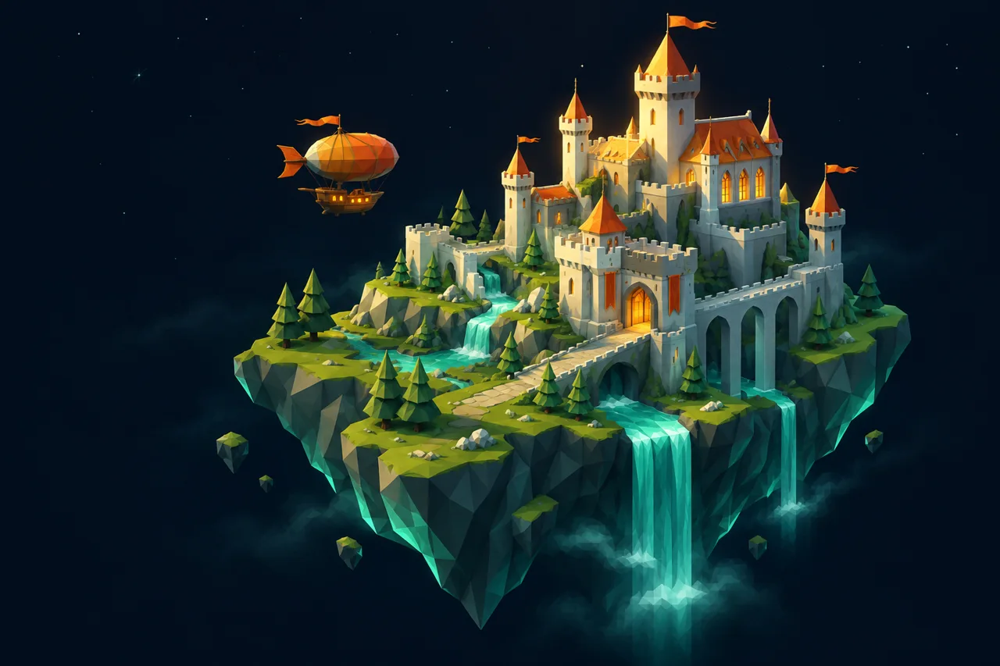
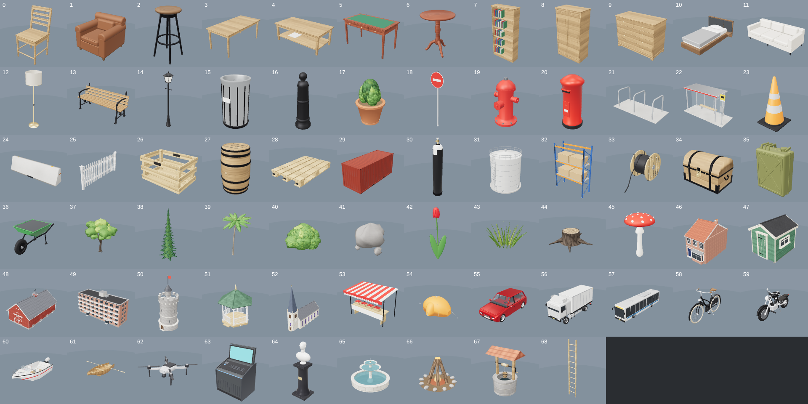

Know the API
The bundled Godot 4.7 reference replaces invented methods with real signatures. Offline.
Your agent. Your game. Real checks.
Give your coding agent the Godot knowledge it needs. Catch invented APIs, check what actually runs, and build 3D models from code.
Open source · MIT · CLI + MCP + Claude Code plugin

Less guessing. More making.
An API reference, a code reviewer and a headless Godot toolkit. Right inside your agent’s workflow.
Get the actual file, line and Godot 4 fix. Migrate the mechanical parts, then check again.
See what it catchesReal output · v0.1.0
74 → 100 after migration and one manual fix.
The bundled Godot 4.7 reference replaces invented methods with real signatures. Offline.
Review scripts, run Godot headless, test behavior and inspect screenshots.
Build and lint clean .glb models, with a node per part and pivots where they belong.
A better building companion
| Your agent… | On its own | With Godotwright |
|---|---|---|
| writes GDScript | yield, export var, KinematicBody2D: Godot 3 habits | Each line flagged with the Godot 4 fix; migrate rewrites the mechanical part |
| calls an engine method | Guesses a name from memory | Looks it up in the bundled Godot 4.7 class reference |
| renames a signal or moves a file | Breaks scene connections and .uid files | rename changes code, scenes, connections and .uid files together, dry run first |
| says “it works” | Without running anything | check, test and play run it headless and report file:line |
| needs a 3D model | Needs Blender | model build makes a clean .glb from one of 59 kinds or 1000 library assets, then lints it |
| opens a pull request | Nobody checks the Godot side | A GitHub Action posts a receipt: review, check and tests (set it up) |
One minute to your first check
One command, no clone: npx runs it straight from npm. Needs Node.js 22.12 or newer. scan, api and review need no Godot install; check runs Godot 4.7 headless.
Review a project straight from npm. No clone needed.
npx -y godotwright review ~/games/my-gameFull install guide for every client · View on npm
Run the agent from your Godot project folder, or pass --project <path>. Use --tier cheap for small models: shorter output and step-by-step instructions.
Models trained on years of Godot 3 tutorials still write yield, export var and KinematicBody2D. The review names every line and gives the Godot 4 fix.
1extends KinematicBody2D 2 3export var speed = 200 4onready var sprite = $Sprite … 11 yield(get_tree().create_timer(1.0), "timeout") … 17 velocity_old = move_and_slide(velocity_old, Vector2.UP) 18 rotation = deg2rad(90) 19 var t = OS.get_ticks_msec()
export var is @export var in Godot 4.onready var is @onready var in Godot 4.yield() is await in Godot 4.An agent forgets to call a tool. The Claude Code plugin does not depend on that: every Godot file Claude edits is reviewed right after the edit, and the errors go straight back to Claude before it moves on.
Godotwright reviewed res://scripts/old_player.gd: 11 errors, 1 warning. Godot will report these too: :1 error [api/unknown-type] Cannot extend "KinematicBody2D" … In Godot 4 it is `CharacterBody2D`. :3 error [api/godot3-syntax] `export var` is `@export var` in Godot 4. :11 error [api/godot3-syntax] `yield()` is `await` in Godot 4. :17 error [api/wrong-arguments] move_and_slide() takes 0 arguments, but 2 are given. … and 7 more Next: fix the errors now (look up the API with godot_api).
Excerpt of real output of godotwright hook post-edit 0.3.0 after an edit of a Godot 3 script.
godotwright hook <event> the same way.Most of the 43 tools are also CLI commands, so they work from any shell or agent. Output is compact and stable, so it is cheap for a model to read. Every write shows the change first, and godot_undo takes it back.
Map the project without starting Godot: scenes and node trees, scripts with signals and exports, autoloads, input map, broken references.
godotwright scanExact Godot 4.7 lookup from the bundled class reference (1078 classes): signatures, inheritance, Godot 3 names.
godotwright api Node2D.look_atSearch the reference in plain words, so the agent finds is_on_floor() instead of guessing.
godotwright api --search "is on floor"AAA review with a 0–100 score for api, performance, quality and structure. Also reviews unsaved code before the agent writes it.
godotwright review --min-score 90Run Godot headless: import, load and instantiate every script and scene, optionally run the main scene. Errors come back as file:line.
godotwright check --runEvery place a name or res:// path is used: code, scenes, signal connections, groups and settings. Call it before renaming or deleting.
godotwright usages take_damageA diff by meaning against git: nodes, properties, connections, script functions and exports, and what the change breaks elsewhere, such as a scene connection to a function that is gone.
godotwright diffWhat a change reaches: the scenes that load the changed files, the tests and saved scenarios that cover them, and the checks to run.
godotwright impactPhysics layers and masks by name and bit value: who detects whom, the exact mask to set, and what can never work.
godotwright collisions --between Player EnemyRename a function, signal, node, action or file everywhere at once, keeping connections, node paths and .uid files right.
godotwright rename hp health --writeChange settings, input actions and autoloads in project.godot, checked against Godot 4.7, touching only that entry.
godotwright project input add jump --key SpaceAdd or remove nodes, set properties, connect signals and attach scripts in a .tscn, without the editor.
godotwright scene add main.tscn . Music AudioStreamPlayerRewrite Godot 3 GDScript to Godot 4 where that is mechanical, and list what is left to do by hand.
godotwright migrate --writeRun GUT or GdUnit4 tests headless and show only what failed, with file:line.
godotwright testRun a scene with an input timeline and print the values you watch per frame: the agent sees the game do something.
godotwright play --input "10 tap jump" --watch Player.positionKeep a passing play run as a regression test in the project, and run them all with every failing claim, its value and frame.
godotwright scenario --save jump --input "10 tap jump" --expect "Player.velocity.y < 0 @ 10"Render a scene or a model to a PNG and say how much of the picture is drawn.
godotwright screenshot --scene res://main.tscn -o shot.pngStart here when something is broken: the review and Godot grouped by cause, most urgent first, each with the lesson that explains it and the fix, then numbered next steps.
godotwright doctor --symptom "falls through the floor"Apply the mechanical fixes for review findings, each labelled safe or check. Shows them first, then reviews the changed files again.
godotwright fix --writeGodot's own GDScript language server, kept warm: warnings at the project's levels, inferred types, definitions and completion, also for code that is not saved yet.
godotwright code diagnostics res://player.gdThe project as a graph of files from where the game starts: unused files with their size (paths the code builds count), why a file is used, what a scene loads, and scene loops Godot cannot load.
godotwright deps unusedUndo the last Godotwright writes, newest first: edits, renames with their moves, migrations, fixes and model builds. A file changed by hand since is left alone.
godotwright undo --steps 2Load a scene once, headless and paused, and keep the game running between calls: a world that takes a minute to load loads once.
godotwright session startDrive that running game: live tree, get and set values, step frames with input until a condition holds, 3D layout, rays, UI issues per window size, and hot reload of edited scripts with every node's values kept.
godotwright game step 120 --until "Hero.is_on_floor() == true"Frame times as a player feels them: p50/p95/p99 against a budget, the slowest frames and what changed on them, and the change since the last run.
godotwright perf --scene res://level.tscnBefore an export: files the presets leave out although the game loads them, and plain data files Godot only exports when include_filter names them.
godotwright exportEvery AAA rule with its fix, so the agent knows the bar before it starts. MCP only: there is no CLI command.
Mark a finding as wrong or right, or say whether a lesson helped. Later reviews on this machine learn from it.
godotwright learn feedbackLessons from real Godot projects: symptom, cause, fix and test, by words, Godot error or rule. gaps lists what Godotwright cannot predict yet.
godotwright lessons moving ship deckKeep a lesson learned here, scrubbed of names, paths and code. It comes back when the same error does; nothing is sent.
godotwright lessons add --title "..." --fix "..."Look back between sessions: draft lessons for errors that keep coming back, "use X, not Y" hints for guessed API names, lessons to merge or retire, each with its evidence. Local, no model; nothing changes until you apply, and undo takes it back.
godotwright dream --apply 1,3One page before a small model builds anything: the kind to start from, parts, size, rules and the order of tools.
godotwright model brief "a helicopter"What a thing is: parts, pivots, typical size with its source, variants and what to anticipate. English or Dutch.
godotwright model identify "a tractor"The model spec format, an example and the ready-made kinds.
godotwright model specOver a thousand ready-made base recipes: furniture, street, storage, nature, buildings, vehicles and props. Build one by id, or start your own from its spec.
godotwright model library "oak chair"Build a clean .glb from a kind or a spec, with UVs, tangents and a node per part, then lint it.
godotwright model build house -o house.glbSee a .glb as text: front, side and top views made of letters, the parts with sizes, and parts that do not touch.
godotwright model view car.glbScore a .glb. With an archetype it also checks the model is what it should be.
godotwright model lint car.glb --archetype carWhat is in a .glb: nodes, triangles, textures and size.
godotwright model inspect car.glbReview a mod against the game it patches, from its source folder or a .pck file list.
godotwright review mod/ --base game/Rules real Godot keeps contradicting turn into hints. Nothing leaves your machine unless you opt in.
godotwright learnSmall pieces. Bigger possibilities.
1000 base models in the asset library, plus 59 ready-made kinds. Clean .glb files, parts, pivots, UVs and tangents included, all tested in Godot 4.7. These are actual renders.

The asset library: 1000 base modelsFurniture, street, storage, nature, buildings, vehicles and props. Search in English or Dutch, build one by id, or start your own from its spec.godotwright model library "oak chair"

Stone walls. Moving drawbridge.
model build castle
A cockpit with a proper view.
model build helicopter
Doors with real hinge pivots.
model build car
Build a little atmosphere.
model build windmill
A new creature takes shape.
model build dragon
Give your world some life.
model build horseEvidence, in the open
168 runs of Claude Haiku, Sonnet and Opus on 12 Godot tasks, each with and without Godotwright, judged by real Godot 4.7.2 behavior tests in CI. Every run passed in both modes, so these tasks do not separate the setups on correctness. Code quality did differ.
| Godotwright | Editor-driving Godot MCP servers | GDScript linters (gdtoolkit) | Godot’s --convert-3to4 | |
|---|---|---|---|---|
| Needs the Godot editor open | No | Yes | No | No |
| Scored review: api, performance, quality, structure | Yes | No | Style, naming, complexity | No |
| Godot 3 code | Flagged with the Godot 4 fix; migrate rewrites scripts | No | No | Rewrites scripts, scenes and settings |
| Live control of the open editor | No | Yes | No | No |
| A running game to inspect and drive | Yes, headless (godot_session) | Some do, through the editor | No | No |
| C# | No | Some do | No | Not yet |
| Best for | Checking and fixing what an agent writes, in the loop and in CI | Working in the open editor with an agent | Code style | A one-time port |
Editor servers such as godot-ai and Godot MCP Pro control the open editor and have more tools; paid in-editor assistants such as Ziva write inside the editor. Godotwright works from files and checks what the agent writes, so they work well together: an editor server to drive the editor, Godotwright to check the code.
Before you jump in
No for scan, api, review, migrate and the edits: they read your project files and the bundled Godot 4.7 class reference. check, test, play and screenshot run Godot 4.7 headless (--godot <path>, $GODOT, godot on your PATH, or a Godot 4 download it finds in the usual folders, Steam or Downloads).
Any agent that speaks MCP over stdio. CI connects Claude Code and Codex to the server on every push. The CLI works from any shell, so agents without MCP can call it too.
No. Learning stays on your machine and stores counters, rule names and API names, never code, names or paths. Sharing anonymous counters is opt-in, off by default, and respects DO_NOT_TRACK. See PRIVACY.md.
Yes. The review flags Godot 3 syntax and names such as export var, yield, KinematicBody2D, deg2rad and move_and_slide() with arguments, and gives the Godot 4 replacement for each.
The target is Godot 4.7.x. Most findings apply to every Godot 4 version, but API lookups answer for 4.7, so a method added after your version may be reported as present.
Yes. Most Godot MCP servers drive the open editor through an addon. Godotwright works from files, without the editor, and checks what the agent writes. Use both: an editor server to drive the editor, Godotwright to check the code.
No. It checks, runs and fixes what you or your agent write, and builds clean base 3D models to refine. It does not replace playtesting or your own judgement.
Yes: godotwright. npx -y godotwright runs the latest version, or install it with npm install -g godotwright.
Made by laaielichter. Built in the open.
Bring your agent. Godotwright brings the checks.
Find it useful? A GitHub star is always welcome.